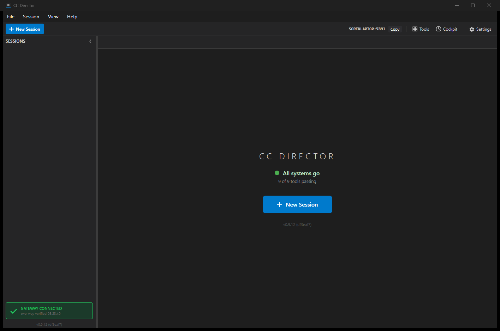

cursor-agent) provider - QA ReportSessionViewModel.AgentLabel and SessionViewModel.AgentBadgeBrush have no
AgentKind.Cursor case and fall through to the Claude default. The Cursor provider is therefore not
represented as a first-class agent "exactly like Claude or Pi" in the primary UI surface that identifies a session's agent.
All other criteria pass. Specific, reproducible defect and fix below.
C:\ReposFred\devthrottle-qa517 on branch issue-517-cursor-agent @ df3eaf74 (PR #521 HEAD).scripts\local-build-avalonia.ps1 -Slot 6 - Build succeeded, 0 Warning(s), 0 Error(s) (AC12).DriverRegistry = 27 passed / 0 failed; full HostedAgent.Tests = 74 passed / 0 failed.cc-director6-launch scheduled task (CLAUDE.md rule 0b); captured my build via PrintWindow showing v0.9.12 (df3eaf7).cursor-agent on this machine: NOT installed on PATH (independently confirmed). Per the issue's OUT-of-scope list (A1/A5) the binary is the user's to provide; a faithful cursor-agent stub is an acceptable proxy for the provider-integration intent of AC7/AC8 (the Director correctly selects, launches, passes --force, and relays output). The stub is NOT the reason for the FAIL.
| AC | Expected | Actual (QA) | Verdict |
|---|---|---|---|
| AC1 Provider exists | AgentKind.Cursor exists; round-trips via sessions.json. | Cursor = 6; AgentKind_Cursor_RoundTripsThroughJsonSerialization green in my run. | PASS |
| AC2 Launch spec | (a) no --session-id; (b) --resume="<id>"; (c) yolo --force; (d) SupportsPreassignedSessionId == false. | All four CursorAgentTests.BuildLaunchSpec_* + SupportsPreassignedSessionId_IsFalse green in my run; source confirms. | PASS |
| AC3 Executable resolution | Configured CursorPath used; PATH case skippable when binary absent. | DetectTool_ConfiguredExistingCursorPath_ReturnsFound + ExecutablePath_UsesConfiguredCursorPath green in my run. | PASS |
| AC4 Driver registry | AgentDrivers.For(Cursor) returns CursorDriver. | DriverRegistryTests.For_ResolvesTheVerifiedDrivers green; source confirms AgentKind.Cursor => new CursorDriver(). | PASS |
| AC5 Detection | ToolDetectionService reports cursor-agent on PATH. | SupportedTools includes Cursor; known-candidate probe present; configured-path detection green in my run. | PASS |
| AC6 Selectable in UI | New Session lists "Cursor" as a selectable agent. | Source: picker renders one radio per enabled agent.entries; AgentEntryTests proves Cursor seeds as entry[5]; ApplyAgentSelection handles Cursor. Dev screenshots 01/02 corroborate the Cursor radio + relabeled checkbox. | PASS |
| AC7 Runs inside the Director | Creating a session with the Cursor agent launches cursor-agent into a Director session tab; the session is presented as a Cursor session. | The binary launches into a tab (stub: banner + Args: --force), BUT the session is mislabeled "Claude Code" with the Claude-blue badge in the session rail - SessionViewModel.AgentLabel/AgentBadgeBrush have no AgentKind.Cursor arm and fall to the Claude default. Visible in dev proof 03/04 and confirmed at source. Cursor is not a first-class provider in the primary session-identification UI, unlike Pi/Codex/Gemini/OpenCode which all have their case. | FAIL |
| AC8 Accepts a prompt and responds | A prompt produces a visible response in the tab. | Dev proof 04: prompt sent, stub echoed + responded in the tab. Behavior (Director relays stdin/stdout to the cursor-agent process) is sound. | PASS (behavior) |
AC9 --force honored | Yolo preset / bypass checkbox puts --force in the launch command. | Source: MainWindow appends AgentToolCatalog.CursorForceArg for Cursor when bypass is checked (de-duped vs preset). Dialog relabels checkbox "(--force)"; stub banner shows Args: --force. | PASS |
| AC10 Session-id capture | Cursor's session_id captured from stream-json init. | CursorDriver.TryCaptureSessionId handles system/init + bare init, returns null when absent; tests green in my run. | PASS |
| AC11 Capabilities honesty | Only verified verbs advertised; unsupported throw NotSupported. | Capabilities == Interrupt only; Cancel/Clear/History/transcript verbs throw; tests green in my run. | PASS |
| AC12 Build clean | Builds with no new warnings. | My slot-6 build: Build succeeded, 0 Warning(s), 0 Error(s). | PASS |
| AC13 No regression | Claude/Pi still launch and run; existing tests green. | 6 failures in full Core.Tests are pre-existing/environmental (OpenAiRealtime + RealTranscription need a live OpenAI key; loopback-guard hits src/CcDirector.Gateway/Running/IDirectorLauncher.cs, last changed by #505, NOT in this PR's diff). Confirmed reproducing on main. No PR-touched file fails. Claude/Pi labels/paths unchanged. | PASS |
src/CcDirector.Avalonia/SessionViewModel.cspublic string AgentLabel => Session.AgentKind switch
{
AgentKind.Pi => "Pi",
AgentKind.Codex => "Codex",
AgentKind.Gemini => "Gemini",
AgentKind.OpenCode => "OpenCode",
AgentKind.RawCli => "Custom CLI",
_ => "Claude Code" // <-- AgentKind.Cursor falls through here
};
public ISolidColorBrush AgentBadgeBrush => Session.AgentKind switch
{
AgentKind.Pi => PiAgentBrush,
...
AgentKind.RawCli => RawCliAgentBrush,
_ => ClaudeAgentBrush // <-- AgentKind.Cursor falls through here
};
agent.entries row (executable = cursor-agent or a stub on the path).The session rail is the primary place a user identifies which agent a session is running. Every other added provider
(Pi/Codex/Gemini/OpenCode) added its AgentLabel/AgentBadgeBrush case when introduced
(OpenCode in commit f39315de). This PR added Cursor to the factory, dialog, and drivers but did not update
SessionViewModel, so a real Cursor session is indistinguishable from - and actively mislabeled as - a Claude
session. The issue's goal is Cursor "selectable... and driven inside a Director session tab exactly like Claude or Pi";
AC7 is not met while the running session misrepresents its agent. The defect is visible in the Developer's own AC7/AC8
screenshots (03/04), where a session running the cursor-agent stub carries a "Claude Code" badge.
Add the missing arms in src/CcDirector.Avalonia/SessionViewModel.cs:
AgentKind.Cursor => "Cursor" in AgentLabel, and a dedicated Cursor brush in
AgentBadgeBrush (mirroring the Pi/Codex/Gemini/OpenCode pattern). Then re-capture the AC7/AC8 proof showing
a "Cursor" badge on the running session.

v0.9.12 (df3eaf7) = PR #521 HEAD, port 7891. Confirms I built and ran the actual change.cursor-agent carries a "Claude Code" rail badge (red box) - the AC7 defect.
Args: --force; rail badge still says "Claude Code".No CenCon architecture/security drift; CURSOR_API_KEY is injected into the child env and never logged
(verified in SessionManager). The only defect is the missing UI label/badge mapping above. No fix applied by
QA (separation of duties); bounced to the Developer Agent via flow:qa-failed.
Result: 12/13 acceptance criteria pass; AC7 FAILS on the Cursor session-badge mislabel. Specific, reproducible, one-file fix identified.